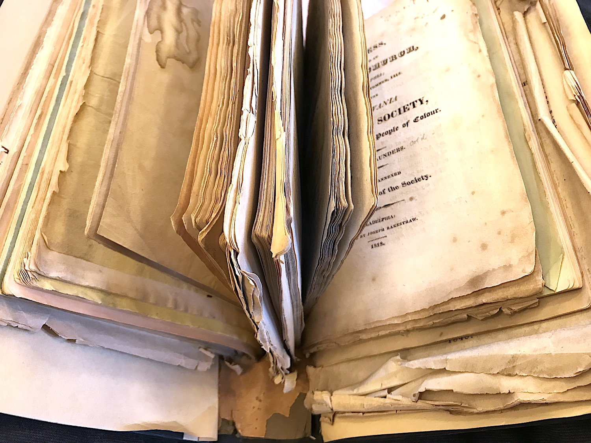

Open call
☓
Urgency Reader is a quick assembling of texts, to be printed on a risograph machine in Pawtucket, Rhode Island in late November, and bound at the last minute to launch at Odds and Ends Art Book Fair at Yale University on December 6. Edited by Paul Soulellis.
☓
Contribute new or previously published texts! Polished or raw, in-progress or finished, unedited notes—anything you’d like to get out there and circulate.
☓
Some topics of interest——
⊹urgency, ⊹craft ⊹queerness ⊹gender ⊹transformation ⊹kinship ⊹race ⊹survival ⊹post-apocalyptic practice ⊹futurity ⊹pedagogy ⊹surveillance capitalism ⊹death of capital ⊹radical publishing ⊹decolonization ⊹augmentation ⊹resistance ⊹sci-fi ⊹collective care ⊹joy
☓
Submit any text-based form——
♢essay ♢creative non-fiction ♢speculative fiction ♢manifesto ♢poetry ♢notes ♢score ♢code ♢script ♢list ♢(anything, really)
☓
Files (PDFs, JPGs, google doc, etc) should be sent as US-letter-sized pages (8.5 in x 11 in) and will be printed “as is.” Handwritten, plaintext, typeset, it’s all good.
☓
Send submissions to——
paul@soulellis.com by Monday, November 11. The edition will be distributed freely or at a very minimal cost to cover the cost of paper. All contributors will receive a copy.

Sammelband (bound reader) of abolitionist pamphlets, 19th century (Providence Public Library)
Some notes on binding——
☓
Bound pages persist! To bind is to fix. To set the pages in order, to fix the order. At the moment when pages are bound, the form is linearized. So much is determined in that moment: what comes first, what comes last. Various things might direct the reading experience but none of it is fixed until the pages are bound.
☓
To resist binding in favor of the loose assemblage is a gesture against fixity, linearity, and conventional hierarchies, and I’m all for it! To be more generous with readers, to give them the agency to direct their own reading experience, and to remix, re-order, re-contextualize the material itself.
☓
But there are good reasons to bind, too. Speed, for one thing: sometimes it’s just easier to staple at the last minute. But also: to bind is to suggest new relationships, purposefully. To package it all up with intention. It’s another kind of generosity. Binding provides a convenience, an easy way to keep it all together. A move against the slipperiness of network culture and screens. To avoid slippage, sometimes. To staple a stack: this collection has been fixed. They’re always here for you, to come back to later. To clip: these pages can come apart: here’s one way to experience them. The sammelband, the compendium, the anthology, the reader: assembled here, these texts are now in context. Bound in proximity, boundless in their potential.